TLDR: VLAs improve their OOD generalization through image augmentation during RL post-training, when applied to the critic only.
Abstract
Vision-language-action (VLA) models currently demonstrate strong performance in a wide range of real-world robotics tasks. However, they often still lack the generalization ability to handle large visual out-of-distribution shifts. Post-training of VLAs with reinforcement learning (RL) has been shown to benefit robustness, but significant room for improvement remains. In this work, we systematically study the effect of image augmentation on VLA post-training. We find that it is crucial to augment only the critic module during RL updates, while leaving the actor's input clean during both rollouts and updates. For π0.5 and GR00T N1.5 this raises out-of-distribution success on LIBERO-Plus by 7.8 and 10.0 points respectively, while augmenting the actor collapses training entirely. We investigate a range of augmentation types and strengths, and provide practical recommendations for improving generalization in VLA post-training.
73.9% → 81.7%, critic-only overlay
66.0% → 76.0%, critic-only shift
Setup
We post-train two VLAs with PPO in the RLinf framework, starting from LIBERO-Spatial fine-tuned checkpoints: π0.5, whose flow-matching action expert shares an attention stack with a PaliGemma VLM, and GR00T N1.5, whose diffusion-transformer head cross-attends to an Eagle VLM. A value head on the VLM's final features serves as the critic.
We train in-distribution on LIBERO-Spatial and measure out-of-distribution generalization on the 1662 visual tasks of LIBERO-Plus, spread over five perturbation axes:
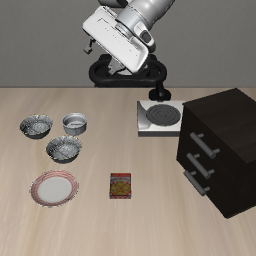
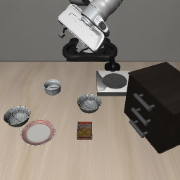
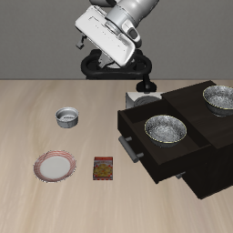
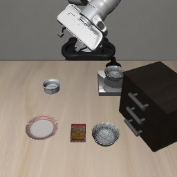
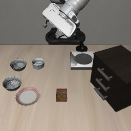
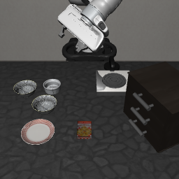
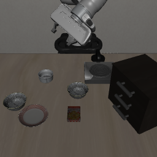
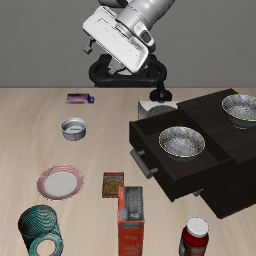
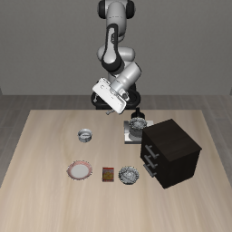
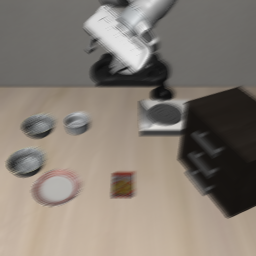
We use two augmentations in our experiments: Random overlay blends each observation with an ImageNet image, \(\tilde{o} = (1 - \alpha)\, o + \alpha\, m\), perturbing appearance. Random shift pads by 10 pixels and crops back to 224×224, perturbing framing. Augmentations are applied only in the training forward pass: rollouts and evaluations always see clean images.
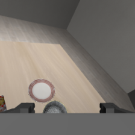
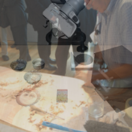
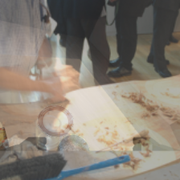
1. Where to augment: the critic, not the actor
In visual RL with small CNNs, prior work found that augmenting both actor and critic works well. For VLAs we find the opposite. Whenever the actor receives augmented observations, PPO clips an overly large fraction of the updates and training collapses to near-zero success. Augmenting only the critic keeps training stable, and improves both in-distribution and out-of-distribution success on π0.5.
π0.5 after PPO post-training with overlay augmentation (α = 0.5).
Why does critic-only augmentation help the actor at all? The VLM backbone is frozen in our runs, so the actor never sees an augmented pixel. It is shaped entirely through the advantage estimates. Writing \(\tilde{V}\) for a critic trained on augmented observations, the temporal-difference residual and the generalized advantage estimate the actor is trained on are
and the policy gradient is \(\mathbb{E}\big[\nabla_\theta \log \pi_\theta(a_t \mid s_t)\, \tilde{A}_t\big]\). A critic that scores a perturbed observation the way it scores the clean one yields more robust advantages, and those advantages are the signal the actor learns from.
2. What to augment with
Both augmentation types help, but neither is uniformly better. Each one transfers best to the perturbation it resembles: overlay helps most on sensor noise, and shift on camera viewpoints and layout. The ranking flips between models because their headroom differs: π0.5 is weakest on sensor noise, while GR00T N1.5 is weakest on camera viewpoints.
OOD success per LIBERO-Plus axis, critic-only augmentation
Each row compares the baseline with both augmentation types. Hover a dot for its value.
3. Augmentation strength
Sweeping the overlay strength α on π0.5, OOD success peaks at α = 0.5. The curve is flat enough that every value from 0.1 to 0.9 still beats the unaugmented baseline, even at α = 0.9, where the observation is mostly ImageNet.
Average OOD success vs. overlay strength α
π0.5, critic-only overlay augmentation. The dashed line is the unaugmented baseline.
Rules of thumb
For practitioners post-training a VLA with PPO who want better out-of-distribution robustness from data augmentation:
- Augment the critic, not the actor.
This is the one choice that has to be right. Augmented actor inputs drive success to zero on both VLAs, while every critic-only run we tried trains stably.
- Match the augmentation to your model's weakest axis.
Overlay perturbs appearance and helps most against sensor noise; shift perturbs framing and helps most against camera and layout changes. Combining both was worse than the better one alone.
- Keep the augmentation strength moderate.
α ≈ 0.5 was best for overlay, but every strength from 0.1 to 0.9 beat no augmentation.
Videos
Showing our best π0.5 policy on LIBERO-Spatial and on each out-of-distribution category. Clips show the base camera (left) and the wrist camera (right).
Full results
Success rates (%) after 300 epochs of PPO on LIBERO-Spatial. IND is the training suite (500 episodes); the OOD columns are the five visual LIBERO-Plus axes, and Avg is their unweighted mean.
Augmentation placement (overlay, α = 0.5)
Augmentation type (critic-only)
Overlay strength α (π0.5, critic-only)
† Collapsed runs were stopped early and are reported at epoch 100. Each configuration is one training run, evaluated once on every one of the 1662 LIBERO-Plus tasks.
BibTeX
@inproceedings{grooten2026augmentation,
title = {{How (and How Not) to Use Data Augmentation
in VLA Post-Training}},
author = {Grooten, Bram and Vanschoren, Joaquin},
booktitle = {NeurIPS Workshop on Post-Training Adaptation
of Robot Foundation Models (RoboPAD)},
year = {2026}
}